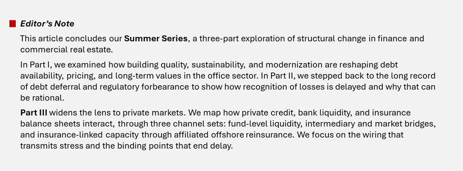
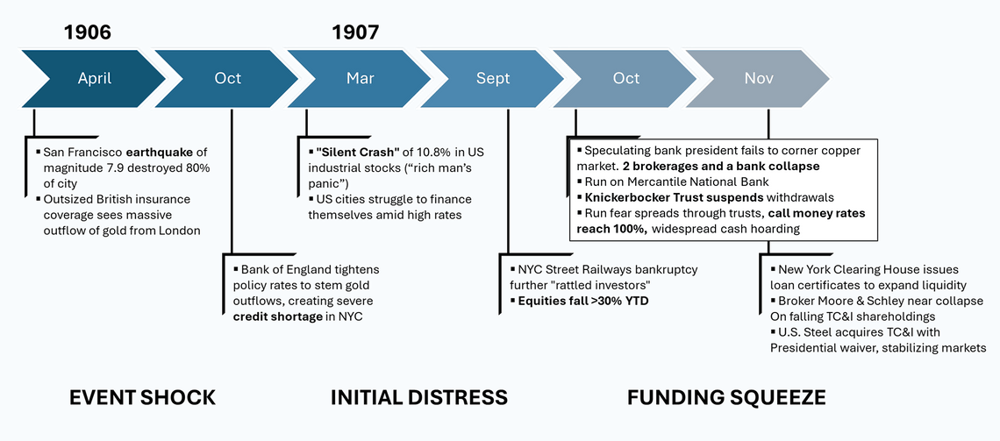
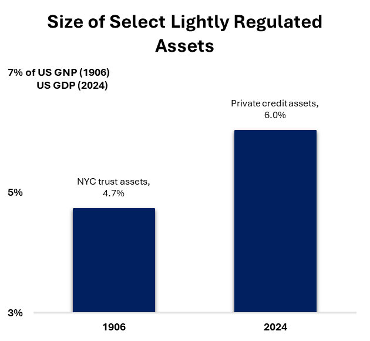
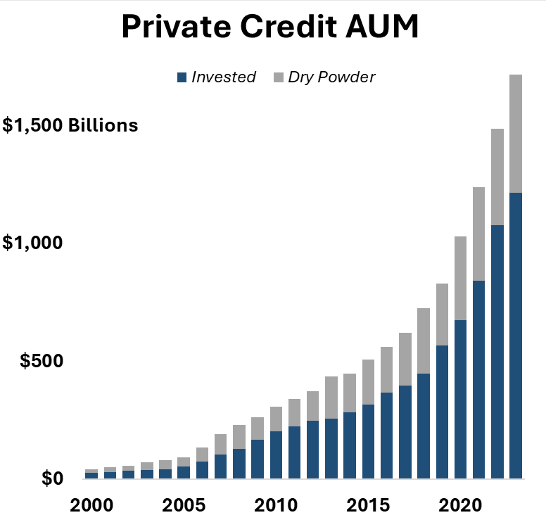
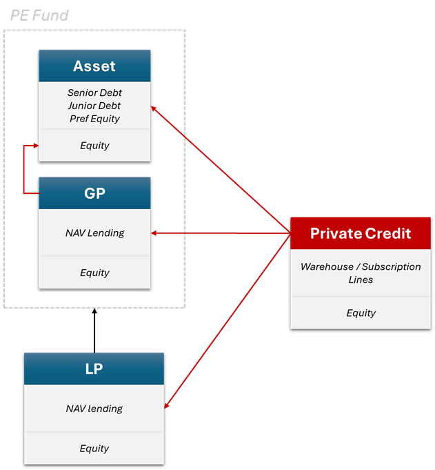
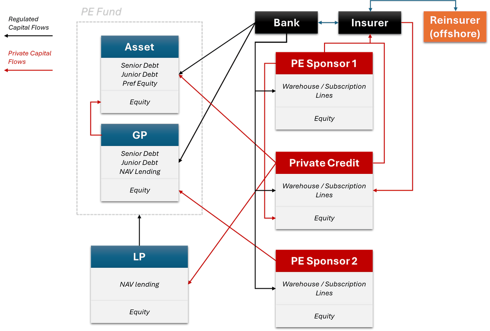
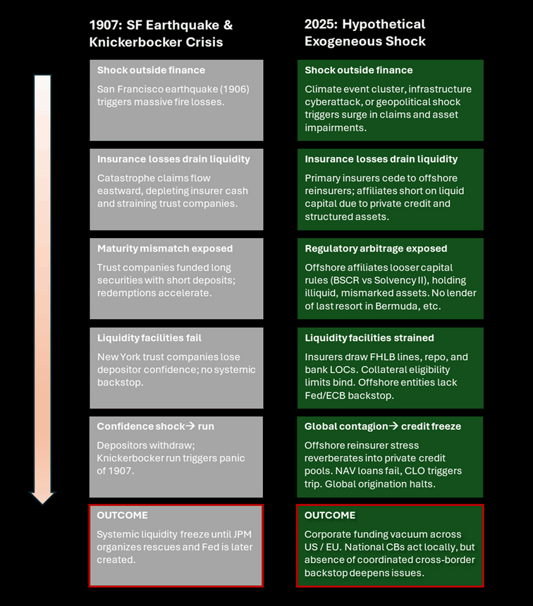
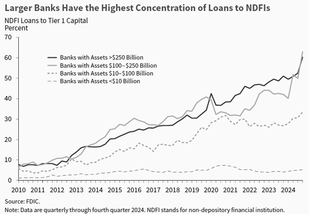

Summer Series Part III: Transmission Lines — Private Credit and Insurance Balance Sheets

The Hidden Currents Beneath Calm Waters
This finale steps back from commercial real estate to the financial circuitry that surrounds it. We explore not just what assets fail but how risk travels.
The point is not which asset class blinks first. It is how private markets carry stress from external shocks into funding channels and capital rules. Illiquid assets meet shorter term capital commitments. Valuation marks arrive late. Oversight is fragmented. Recognition comes through covenants, rating triggers, and collateral terms, under rules already in place.
A Familiar Panic
It has already begun. A prominent fund delays redemptions. A large investor misses a margin call. Confidence thins. Liquidity pulls back. Within days a web of long-dated, illiquid bets meets short-term funding needs.
This was the Knickerbocker Crisis of 1907, but it could easily be 2025.
In 1906, a 7.9-magnitude earthquake tore through San Francisco, flattening buildings and igniting fires that burned for days, ultimately destroying 80% of the city [1]. The physical devastation was immense, but the financial shock was equally destructive, and yet to come. Insurers concentrated in Britain faced unprecedented claims, forcing them to liquidate assets and ship gold abroad to meet dollar claims [2]. The Bank of England lifted its policy rate to halt the gold outflow and protect convertibility, attracting capital back to London and away from the US. That drain of liquidity from New York struck at precisely the wrong moment, tightening credit when speculative structures most needed it.

The earthquake was not a financial event, yet it exposed the system’s fragility. The earthquake did not hit New York, but insurance claims did, by draining liquidity when it was most needed.
In 1907, the institutions in trouble were trust companies: lightly regulated, loosely capitalized, and reliant on mismatched durations with retail deposits funding speculative securities. They expanded aggressively, often without understanding the risks they were taking. In 1906, the total value of New York City trust company assets had reached $1.36 billion, an increase of 244% over the preceding decade, and a figure that represented almost 5% of GNP at the time [3].

Today’s system is more sophisticated, more institutional, less mismatched, and also far more opaque. The actors have changed to private credit funds, multi-asset sponsors, insurance affiliates, and alternative managers. But the scale and lack of oversight is more than comparable.

By the start of 2024, private credit globally had grown to $1.8 trillion in AUM, up from only $500 billion in 2015, an increase of more than 300% [4]. The scale now represents more than 6% of US GDP, with exposures that extend far beyond the reach of a single market. The structure rhymes with history: long-term, illiquid exposures funded by shorter-term obligations, with no consolidated oversight and priced on stale marks. The trust has simply moved upmarket.
The Architecture of Fragility - Wiring, Channels, and Chokepoints
This section maps the plumbing: who provides liquidity, how it’s channelled through intermediaries, and where it can hit limits. The main actors have shifted and are now private funds, banks, and insurers, including affiliated offshore vehicles embedded in larger platforms.
In calm conditions these routes can substitute for each other. In stress they tend to converge, which is when chokepoints matter more than narratives.
The Channels:
- Fund-level liquidity: Subscription facilities secured by uncalled investor commitments sit alongside NAV and hybrid NAV facilities secured by the portfolio itself. Together they smooth timing and capital calls, but they also rely on marks that can lag and on cross-collateral features that can blur discipline when values are slow to adjust.
- Intermediary and market bridges: Warehouse lines are intended to be short bridges with term take-out from insurers or capital markets. Platforms also use bank and dealer credit and manager-level term funding such as revolvers and unsecured notes. These extend capacity in benign markets, then introduce refinancing dates and exit windows that can bunch when conditions turn.
- Insurance-linked capacity: Offshore reinsurance vehicles warehouse private-credit exposure and now set capital headroom for the broader ecosystem. Matching long liabilities with long assets makes sense, but the underlying liquidity should not be overlooked. In this cycle that headroom is likely to be the main constraint, expanding or contracting with losses, ratings, or policy changes.
The Chokepoints:
- Insurer capital and ratings headroom: Statutory capital, concentration limits, and rating frameworks cap affiliated capacity and can tighten quickly after losses or regulatory shifts.
- Market access and rollover risk: Bridge extensions, syndication or securitisation windows, and refinancing dates can converge at the wrong time, closing exits just as liquidity is needed.
- Borrowing base and covenant limits: Advance rates, eligibility, and step-downs shrink capacity as values move, and cures or cash sweeps pull action forward once thresholds are hit.
The weak points in today’s system lie less in banks and more in the architecture of private capital, but that doesn't mean they aren't still interlinked. In 2025 alone, private credit has already been flagged as a potential systemic risk by no less than the Federal Reserve, the IMF, the FDIC, Moody’s and even Jamie Dimon.
But this is less about spectacular losses and more about the slow accumulation of opacity.
Private credit funds increasingly lend against portfolios of illiquid private assets, with aging CRE one important component. LTVs of 5-30% appear conservative, but underlying valuations often materially lag market reality and collateral can be synthetic or cross-collateralized [5]. These lenders also extend credit to limited partners and, in some cases, to the assets themselves. The result is a triple entanglement inside a single fund that can create valuation circularity and weaken independent discipline as fund equity drains. A significant share of these credit facilities support real assets such as property and infrastructure, which embeds funding risk in operating assets [6].
Stylized Private Capital Flows with Triple Entanglement

Some insurers, often those affiliated with private capital platforms, warehouse these private debt exposures in offshore reinsurance vehicles. US life insurers’ offshore reinsurance liabilities now exceed $1 trillion, which deepens opacity and complicates consolidated oversight [7]. These arrangements can sit within a broader private equity-insurance family affiliation that links origination, financing structures and balance sheets, adding yet another layer of opacity to a lightly regulated space [8]. Private credit lenders are unlikely to bear the bulk of losses themselves. Their seniority and structural protections are strong. But by extending risk without resolving it, they distort timelines, encourage delayed recognition of losses, and impair price discovery.
Complex Interconnections between Private Capital and Regulated Financials

Affiliated offshore reinsurance is a key constraint. It sets the capital headroom that governs how much private credit insurers can fund, and how fast they can pull back.
External Shocks That Break the Delay
In 1907 the San Francisco earthquake didn’t topple New York’s trusts. Insurance claims did, by draining liquidity and exposing maturity mismatches.
Today many shocks originate outside finance. A severe hurricane season or sustained insurance retreat can reprice coverage, cut capacity, and drain insurer headroom, tightening private credit funding. Physical damage, insurance cost spikes, and downtime push valuations lower and raise cash needs. Those needs flow through private-market lines in real time, even if funds remain solvent on paper.
- Physical and insurance shocks: Storms, wildfires, floods, or sustained insurance retreat reprice coverage and cut capacity; most acute for property and casualty (P&C) carriers and reinsurers, with life insurers exposed via CRE, CMBS, direct mortgages, and affiliated offshore reinsurance headroom.
- Rates, FX, and collateral: Sharp moves in yields, basis spreads, or currencies break refinance math and trigger margin calls and collateral posts; life insurers feel asset-liability management (ALM) and derivative pressures, while P&C portfolios face mark-to-market strain.
- Policy, regulation, accounting, and ratings: Changes in capital rules, tax, disclosure, valuation, or rating methodology raise collateral needs and shrink borrowing bases; lifecos and reinsurers can see affiliated capacity tighten quickly.
- Investor liquidity and commitments: Pension, sovereign, or endowment outflows slow capital calls and reduce comfort on subscription lines; insurers are often also LPs and separate-account providers, so liquidity cycles feed back into platform capacity.
- Geopolitics and cyber events: Tariffs, sanctions, port closures, supply-chain shocks, or cyber incidents disrupt cash flows; P&C carriers hold direct exposures while life insurers and reinsurers face collateral and counterparty constraints.
Delay works until an external force makes it irrelevant.

The Triggers That Force Recognition
Delay does not end with a change of view. It ends when fixed limits are reached. In this cycle, watch the insurance channel first. These are the limits that matter:
- Insurer headroom tightens: Offshore and affiliated insurers face capital charges, collateral calls, concentration limits, rating-contingent haircuts, and policyholder liquidity needs after large losses, rating moves, or regulatory changes. When capacity is used up, affiliated funding and warehousing slow or stop; supply shrinks just as demand for liquidity rises.
- Warehouse lines don’t roll: Take-out depends on insurer and capital-markets appetite, dealer balance-sheet capacity, and securitisation or syndication windows. If eligibility tightens or exits fade, lines don't roll; borrowers must repay, add collateral, or sell assets.
- Fund lines hit their ceiling: Subscription and NAV facilities have advance-rate limits, eligibility tests, and step-downs. As values fall or funds season, borrowing bases shrink. Any over-advance must be cured with cash, collateral, capital calls, or sales.
- Covenants trip before defaults: Lower marks breach LTV and coverage tests even if debt service is current, triggering cash dominion, sweeps, and amortisation. If uncured in a tight market, the breach becomes an event of default.
These are simply limits of the wiring. When one trips, the timetable accelerates.
Transmission Without Collapse
Private credit has often provided stable funding through difficult markets. The sector appears resilient on the surface, with senior positions in the capital stack, low LTVs, and long lock-ups from institutional investors (for now). Yet these same characteristics allow it to act as a powerful transmitter of risk.
Since the global financial crisis, banks have increased their lending to private credit (non-depository financial institutions) from about 1% of total loans in 2010 to 12% in 2024 [9]. For the largest US banks, these exposures now equal roughly 60% of Tier 1 capital, from only 8% in 2010 (see chart below) [10]. These are the channels that light up when many borrowers draw lines at once, converging on the same chokepoints. In 1907, the gold shipments to pay earthquake claims starved the New York money market of funding. The modern equivalent may be a simultaneous draw on bank credit across global platforms, potentially coordinated with affiliated insurance balance sheets.

Borrower quality is another pressure point in aggregate. Many are sub-bank grade, sponsor-backed companies with weak fundamentals, negative EBITDA, or limited collateral [11]. Competitive pressure erodes underwriting standards, leading to covenant-lite deals, PIK toggles, and distressed exchanges. In a benign market, these features buy time. Under external stress, they act like dry tinder, allowing a single default to ripple through club deals and shared exposures, touching pension funds, endowments, and insurers without a single headline collapse.

Opacity is the final accelerant. With no real-time pricing, no transparent covenant tracking, and no public impairment disclosures, regulators and counterparties are effectively flying blind [12]. Even the suspicion of hidden losses can trigger a wave of de-risking. In a system already facing a catalyst outside its control, opacity transforms nervousness into action and action into contagion. Recent reporting underscores the point: private credit has expanded inside a data-light ecosystem where disclosure is limited by design [13].
Monitoring the Horizon
In 1907, trust companies collapsed when the gap between their book values and reality became too wide to ignore. Today’s actors are different, but the incentives are the same.
The risk today is architectural. Private markets connect illiquid assets to fund lines, bank credit, and insurer balance sheets. These pipes can transmit stress before losses are recognised. The practical work is measurement and alignment. Publish and monitor facility sizes and advance-rate grids. Track warehouse roll criteria and take-out dependence. Map insurer capital headroom where affiliated exposures are warehoused. Concentration and cross-collateral links matter more than narratives.
For long-horizon allocators this is not just stewardship, it’s systemic risk management. Quantify the channels, stress the junctions, and hold optionality where others hold leverage.
- KA Odell and Marc Weidenmier. “Real Shock, Monetary Aftershock: The 1906 San Francisco Earthquake and the Panic of 1907”. Journal of Economic History. 2005 ↩
- Robert F. Bruner & Sean D. Carr. “The Panic of 1907 – Heralding a New Era of Finance, Capitalism, and Democracy”. John Wiley & Sons. 2023 ↩
- Robert F. Bruner & Sean D. Carr. “The Panic of 1907 – Heralding a New Era of Finance, Capitalism, and Democracy”. John Wiley & Sons. 2023 ↩
- Bank of England. “Non-bank risks, financial stability and the role of private credit”. Speech by Lee Foulger. Jan 2024 ↩
- Oaktree. “NAV Finance 101: The Next Generation of Private Credit”. 2024; White & Case. “NAV and Holdco back-levering financings – practicalities of collateral enforcement by asset class”. Jan 2025 ↩
- KKR & Co have noted that 58% $78B AUM in private credit is tied to asset-based lending (Lenore Palladino and Harrison Karlewicz. “The Risks of Unregulated ‘Private’ Credit Funds”. University of Massachusetts Amherst. Jun 2025) ↩
- “US life insurers’ offshore reinsurance liabilities breach $1tn”. Financial Times. May 21, 2025 ↩
- “Inside the private equity-insurance nexus”. Financial Times. Jun 27, 2025 ↩
- Federal Deposit Insurance Corporation. “Risk Review”. 2025 ↩
- Federal Deposit Insurance Corporation. “Risk Review”. 2025 ↩
- Lenore Palladino and Harrison Karlewicz. “The Risks of Unregulated ‘Private’ Credit Funds”. University of Massachusetts Amherst. Jun 2025 ↩
- Moody’s. “Private Credit & Systemic Risk”. Jun 2025 ↩
- “Private credit thrives in darkness”. Financial Times. Jun 25, 2025 ↩